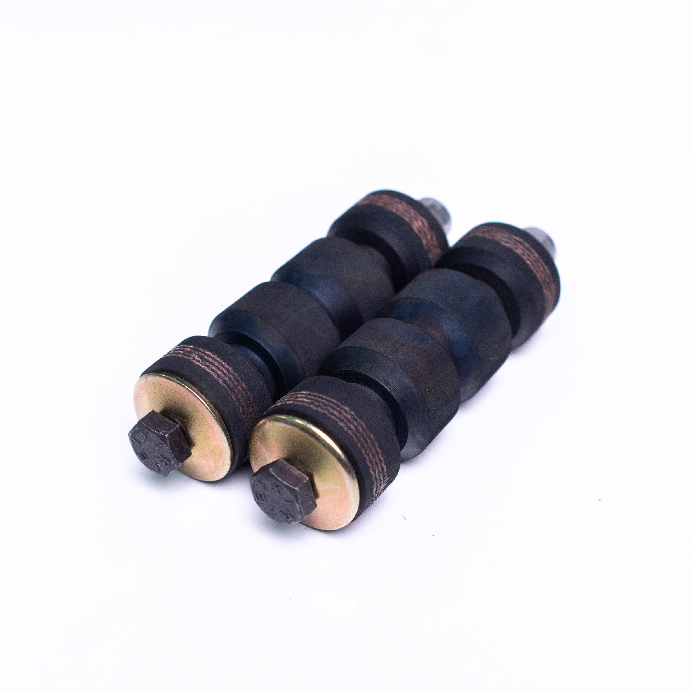

CONHEÇA
CADA DETALHE.
Bieleta dianteira / KIT10006
LEITURA VISUAL DO COMPONENTE

01 / MATERIALBorracha
Borracha
de pneu lonado.
Detalhe ampliado
da peça real.
CONJUNTO
02 bieletas dianteiras
APLICAÇÃO CADASTRADA
S10 / Blazer · 1995 a 2011